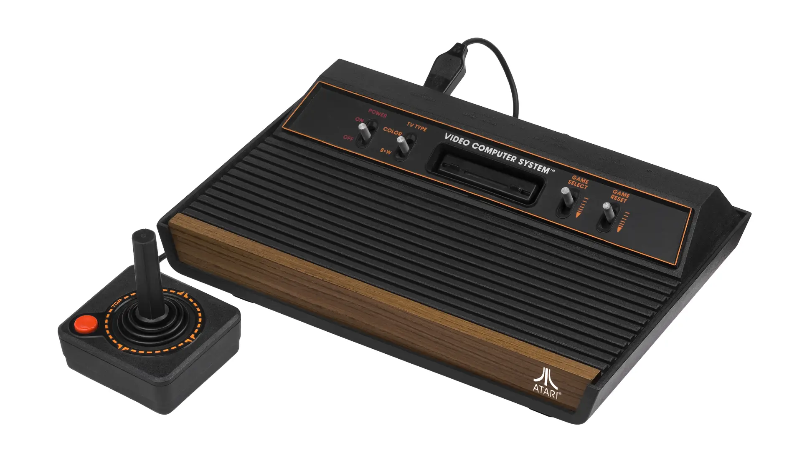
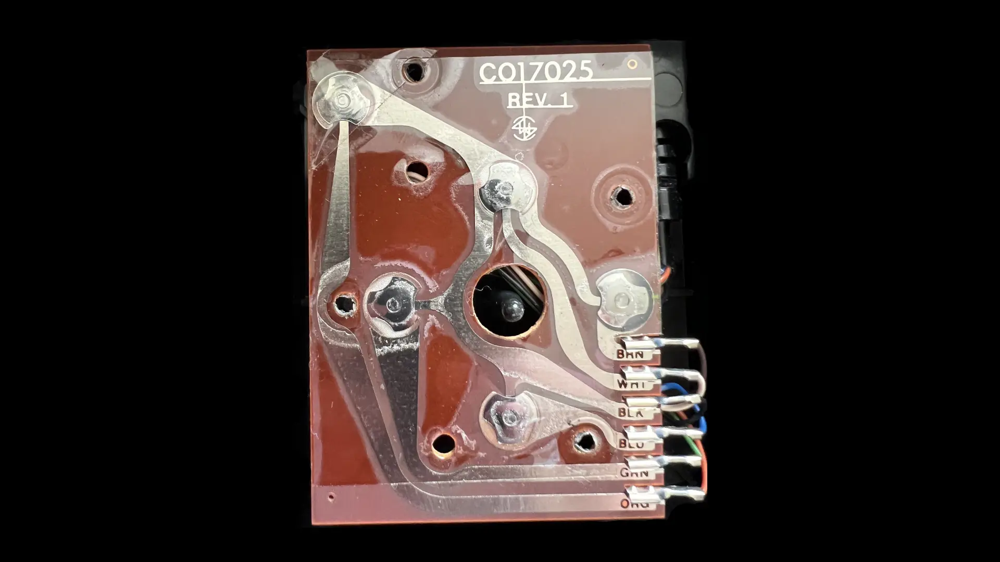
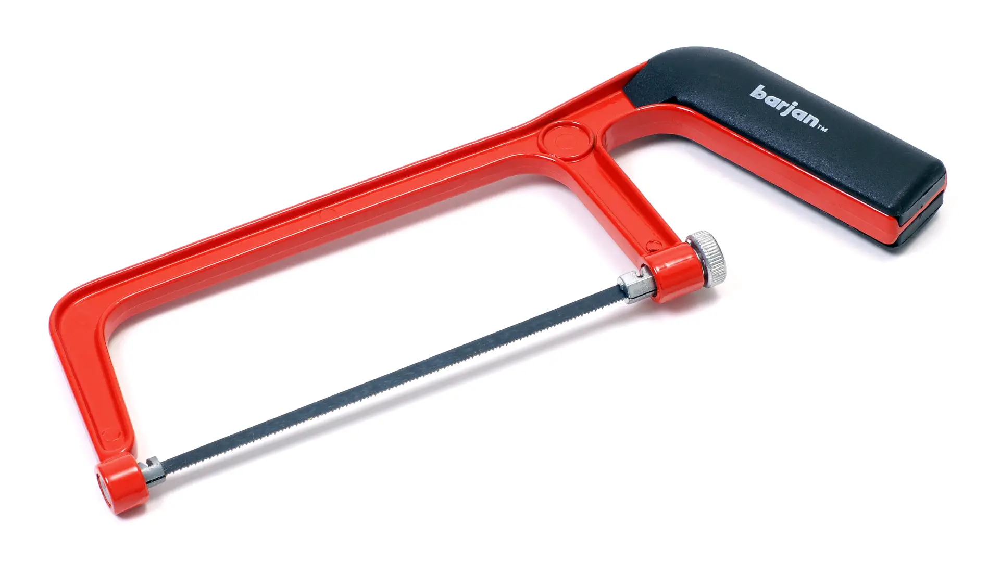
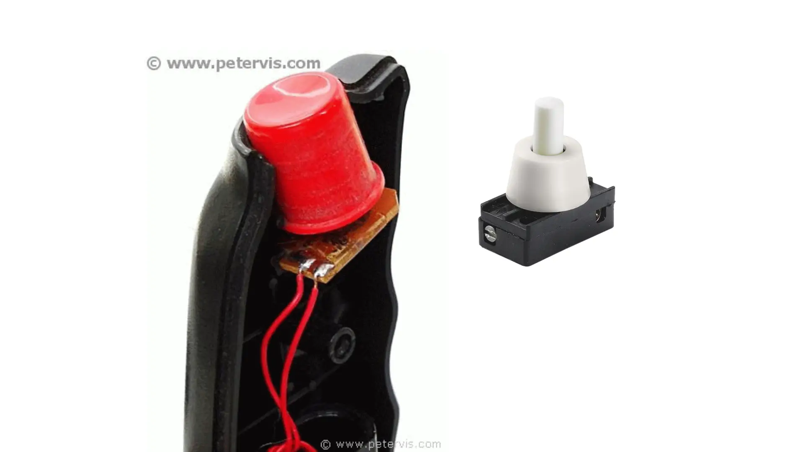

Joystick Hack
What follows is the first electronics mod I did as a child, with no artifacts to show for it. Circa late 1980s.
We didn't have digital cameras back then and I didn't have the foresight to take process photos using a regular camera, and didn't even think of preserving the modded monstrosity as a keepsake. You'll just have to take my word for it.
The priming
Growing up, we had an Atari 2600 Video Game Console, with CX40 joysticks to go with it. An issue with the joysticks, possibly due to our forceful usage, was that the metal dome switches on the circuit board would crack and flatten, causing the joystick to malfunction in one or more directions.

My architect/photographer/audiophile dad wasn't shy of cracking open electronics to do simple repairs. A single demonstration on how to open a joystick to unbend and reposition the metal contacts launched me on my DIY electronics repair journey. I performed all future joystick repairs.
The circuit board and its wiring was very simple to intuitively understand for an uninitiated kid: Just 6 wires for ground, the 4 directions and the fire button. (See: Atari 2600 Field Service Manual, 7-1 & 7-2.)

Credit: Atari2600PAL, forum post on AtariAge, used with permission.
The opportunity
Fast forward to many years later. I'm visiting my cousin and we're gaming on his Commodore 64. My cousin has autofire joysticks (a feature that allows a joystick to automatically send repeated fire signals without the need for the user to press the fire button repeatedly), which I never bothered buying.
One of his autofire joysticks is physically broken and he's thinking of tossing it out in the garbage. I said I wanted to examine it and took it from him. Given my understanding of a standard non-autofire joystick, I was very curious about what made these autofire joysticks tick.
I know nothing about electronics beyond "if you touch two metals, electricity flows through them" at this point.
The inspection
I take the joystick home, unscrew the housing and start examining the circuit board. Extrapolating my understanding of a basic joystick's circuit over the incomprehensible circuit elements of the autofire circuit, I visually isolate a section that is most likely responsible for the autofire action. I use my dad's circuit tester to verify.
I don't remember the make and model, but it probably looked something like the bottom right of this QuickShot II circuit board:

Credit: Giacomo Vernoni, blog post on oldcomputr.com, permission pending.
The hack
And here's comes the hack.

I hacksaw the autofire section out of the circuit board, and franken-solder it to the circuit board of my non-autofire QuickShot I joystick with wires and tuck it sideways inside the joystick housing. I superglue a single wire along the original 6-lead wire of the joystick to upgrade it to 7 leads. The stripped end of this extra wire is inserted into the +5V hole of the female DE-9 connector. I replace the top fire button of my joystick with a pole push button, which happens to fit perfectly in the shaft.

Credit: Peter Vis, page on petervis.com, permission pending.
And it worked!
I had a Frankenstein's monster of a joystick with an autofire circuit retrofitted on it like a parasite. I was clicking the toggle switch on the top to turn on autofire and clicking it again to turn it off.
Courage, luck, success. Whatever confidence I had for all the other electronics mods I did in later life, I trace them back to this very first hack — literal hack, with a hacksaw involved.